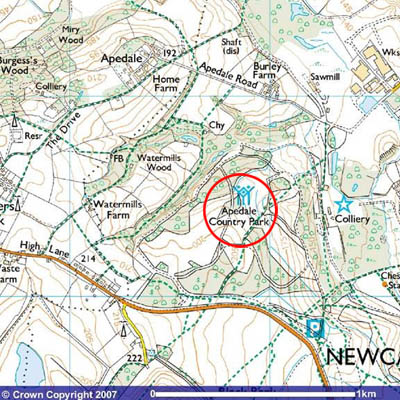

Find us
| The Moseley Railway Trust is based in the Apedale Country Park near Newcastle Under Lyme. Apedale Country Park can be reached by road or public transport By Road... A PDF of these directions can be downloaded here. From the North & South •Leave the M6 at Junction 16 and follow the A500 towards Stoke on Trent •At the A34 junction, leave the A500 and turn right towards Newcastle under Lyme •At the second roundabout after leaving the A500 (Mc Donald's restaurant on the left), turn right onto the B5369 following signposts to the Apedale Valley and Loomer Road Industrial Estate. (you will shortly cross a mini roundabout at a tee junction) •After about 600 metres, at the main roundabout in Chesterton take the second exit into the Loomer Road Industrial Estate •Follow Loomer road to the end, and follow the road to the right into the country park •Keep going straight ahead until you see car park signs, just by the Apedale Heritage Centre. Please park in the marked car parks. •The railway is located just beyond the Heritage Centre, although there is no access to cars From the East via the A50 •Follow the A50 until it meets the A500 and turn right following M6 North signs •Follow the A500 until you see the A34/Kidsgrove junction before you reach the M6 •Turn left onto the A34 south towards Newcastle Under Lyme •After about 600 metres, at the second roundabout after leaving the A500 (Mc Donald's restaurant on the left), turn right onto the B5369 following signposts to the Apedale Valley and Loomer Road Industrial Estate. (you will shortly cross a mini roundabout at a tee junction) •At the main roundabout in Chesterton, take the second exit into the Loomer Road Industrial Estate •Follow Loomer road to the end, and follow the road to the right into the country park •Keep going straight ahead until you see car park signs, just by the Apedale Heritage Centre. Please park in the marked car parks. •The railway is located just beyond the Heritage Centre, although there is no access to cars A note for SatNav users... If you are using satellite navigation to find us, the best post code to use is ST5 7LB which is for the speedway track on the approach road to the country park. Once you reach the speedway, continue to follow Loomer Road and follow the road to the right into the country park then follow the directions above to the car park. By Public Transport... Chesterton Village is served by bus routes 4 and 4A from Hanley. These are operated by First. The 4A route continues to Kidsgrove Town Hall, a short distance from Kidsgrove station. This is the simplest means of reaching Apedale from a railway station. Kidsgrove station now enjoys the best service ever, with trains provided by the East Midlands Trains Derby-Crewe route, Northern Rail Stoke-Manchester stopping trains and London Midland trains from London Euston to Crewe via Stoke. Stoke on Trent station is well served by trains from all parts, including Virgin West Coast trains from London Euston, Cross Country Trains from Birmingham and elsewhere, East Midlands Trains Derby-Crewe trains and Northern stopping trains from Manchester. There is no direct bus route from Stoke station to Chesterton; it is recommended that one catches a (frequent) bus to Hanley, and then the 4 or 4A as above. One should alight in the centre of Chesterton Village, on London Road, and then proceed as follows:- •Walk south along London Road. At the roundabout in Chesterton, turn into Loomer Road. •Follow Loomer road to the end, and follow the road to the right into the country park •Keep going straight ahead until you see car park signs, just by the Apedale Heritage Centre It is about a fifteen minute walk from Chesterton Village. There is an infrequent bus route 35 from Newcastle under Lyme bus station which serves Loomer Road, and operates to a point significantly closer than the 4/4A routes described above. Bus information can be found at www.stokebus.info Train information can be found at www.nationalrail.co.uk |